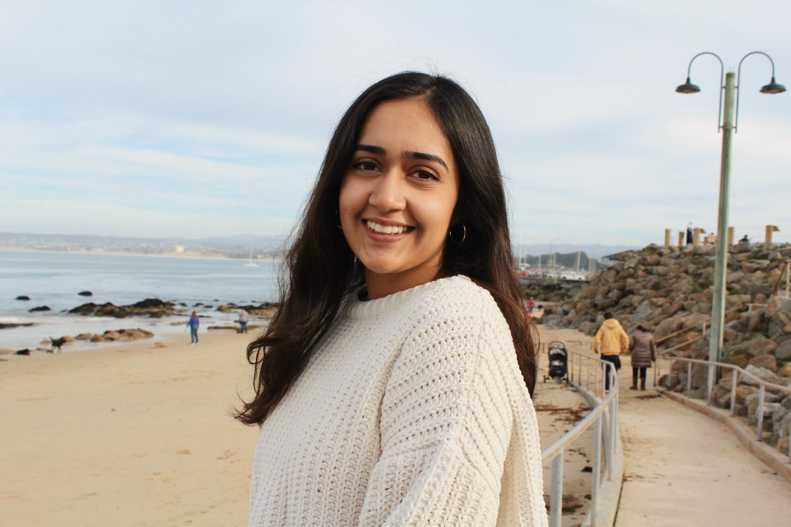

Chelsea Fernandes
Santa Clara University
Hello!
Feel free to use the links in the menu as well as the icons on the right to find additional
information about me!
About Me
Hi, I'm Chelsea! I'm an aspiring software engineer studying computer science and engineering at
Santa Clara University.
Some of my interests include web development and machine learning. I'm always ready to tackle a new
problem and can work
very well on a team.
Currently, I am working on a research project combining two of my interests: machine learning and
biomedical applications.
For the past year, I have been culminating the perfect dataset of brain MRI scans with the hopes of
automatically detecting
the presence of contrast agents in the scans. I have found it to be quite the challenge, but it is
definitely something that
is worth the time and effort. To learn more about my other projects (such as this website!), see
"coding projects" in the
navigation bar above.
Apart from my technical interests, I am also a strong advocate for women in engineering. I am a
member of the society of women
in engineering, where I take part in various supportive events and am able to bond with other women
in the engineering department.
I have attended the San Jose Women's March for the past 3 years, which I always find to be such an
uplifting experience.